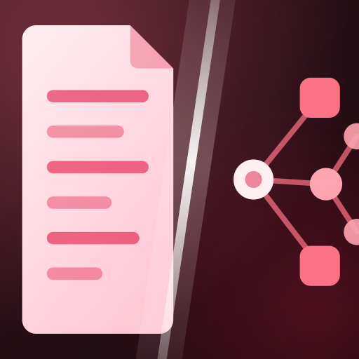

Next Innovation
規劃中
03+
更多企業 AI 應用，敬請期待
產品陣容將持續拓展，讓更多企業流程擁有安全、可靠且真正能落地的智慧能力。
Enterprise AI Solutions
企業級智慧應用
從文件理解到知識萃取，打造可追溯、可治理、可落地的企業 AI 產品。
Product Portfolio
選擇產品，查看完整介紹

01
解析合約、報價與規格文件，協助審查與版本比對；每一條結論都能追溯至來源頁碼。
02
匯入文件、影音與圖片，完成知識清洗、蒸餾與索引，讓企業問答找得到、用得上、值得信任。
03+
產品陣容將持續拓展，讓更多企業流程擁有安全、可靠且真正能落地的智慧能力。
Knowledge in Practice
從真實情境與導入經驗，找到適合企業的知識應用起點。